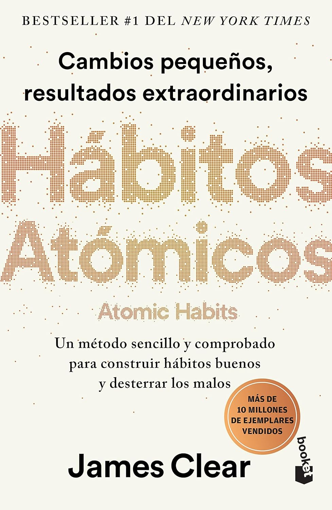
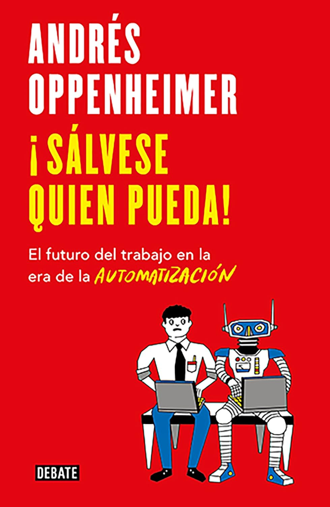
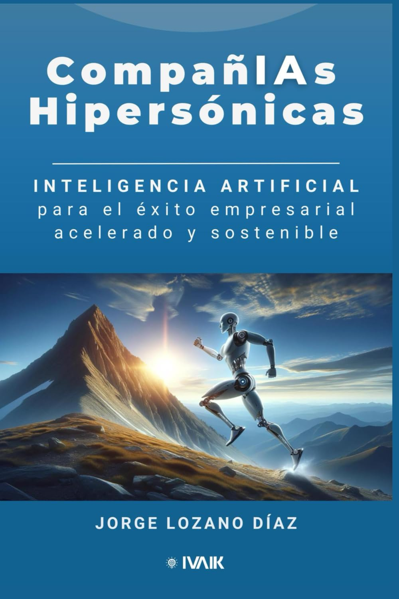
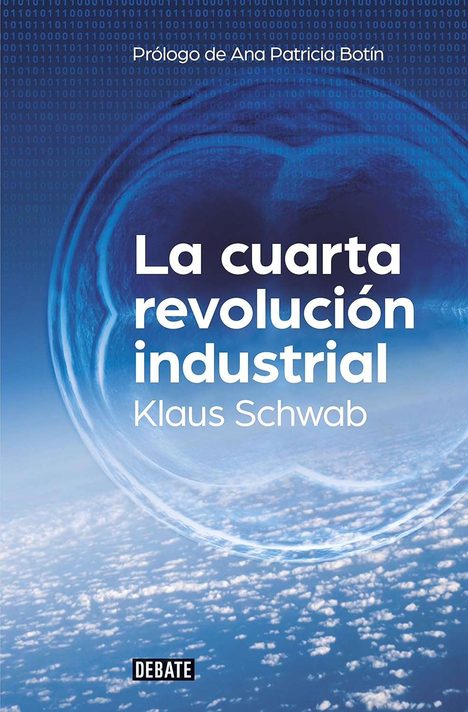

Lo que dicen nuestros clientes
Historias de éxito de quienes ya han potenciado su conocimiento con nuestros productos
"El libro sobre tesis académicas y el curso complementario me ayudaron a completar mi investigación en la mitad del tiempo previsto. Las herramientas de IA recomendadas son excelentes."

María Rodríguez
Doctoranda en Bioinformática
Universidad Nacional de Colombia"Implementamos DataAnalyzer Pro en nuestra institución y ha transformado por completo nuestra capacidad de análisis. El soporte técnico ha sido excepcional y el programa es intuitivo incluso para quienes no son expertos en datos."

Carlos Méndez
Director de Tecnología
Instituto Tecnológico de Monterrey"La laptop ASUS que compré a través de la tienda de FEIAAL llegó en perfectas condiciones y el rendimiento es excepcional para nuestros proyectos de investigación en machine learning. Además, el asesoramiento previo a la compra fue muy útil."

Laura Torres
Investigadora en IA
Universidad de São Paulo¿Listo para potenciar tu conocimiento?
Explora nuestra colección completa de productos y encuentra los recursos perfectos para tu crecimiento personal y profesional.